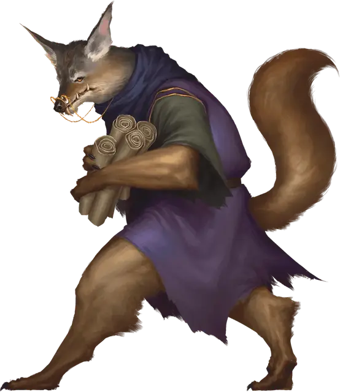

Арканалот
Arcanaloth
Среднее Исчадие (Юголот), нейтрально-злое

Класс Доспеха 17 (природный доспех)
Хиты 104 (16к8 + 32)
Скорость 30 футов, летая 30 футов
| мод | спас | ||
|---|---|---|---|
| СИЛ | 17 | +3 | +3 |
| ЛОВ | 12 | +1 | +5 |
| ТЕЛ | 14 | +2 | +2 |
| мод | спас | ||
|---|---|---|---|
| ИНТ | 20 | +5 | +9 |
| МДР | 16 | +3 | +7 |
| ХАР | 17 | +3 | +7 |
Навыки Восприятие +7, Магия +13, Обман +9, Проницательность +9
Сопротивление урону огонь, холод, электричество; дробящий, колющий, рубящий от немагических атак
Иммунитет к урону кислота, яд
Иммунитет к состояниям очарование, отравление
Чувства истинное зрение 120 футов, пассивное Восприятие 17
Языки Все, Телепатия 120 фт.
Опасность 12 (8400 опыта)
Бонус мастерства +4
Особенности
Врождённое колдовство. Базовой характеристикой для врождённого колдовства арканалота является Харизма (Сл спасброска от заклинания 15). Он может накладывать следующие заклинания, не нуждаясь в материальных компонентах:
• Неограниченно: волшебная стрела [magic missile], невидимость [invisibility] (только на себя), раскалённый металл [heat metal], смена обличья [alter self], тьма [darkness];
Сопротивление магии. Арканалот совершает с преимуществом спасброски от заклинаний и прочих магических эффектов.
Магическое оружие. Атаки оружием арканалота являются магическими.
Использование заклинаний. Арканалот является заклинателем 16 уровня. Его базовой характеристикой является Интеллект (Сл спасброска от заклинания 17, +9 к попаданию атаками заклинаниями). У него подготовлены следующие заклинания волшебника:
• Заговоры (неограниченно): волшебная рука [mage hand], малая иллюзия [minor illusion], огненный снаряд [fire bolt], фокусы [prestidigitation];
• 1 уровень (4 ячейки): обнаружение магии [detect magic], опознание [identify], Тензеров парящий диск [tenser’s floating disk], щит [shield];
• 2 уровень (3 ячейки): внушение [suggestion], воображаемая сила [phantasmal force], обнаружение мыслей [detect thoughts], отражения [mirror image];
• 3 уровень (3 ячейки): контрзаклинание [counterspell], огненный шар [fireball], ужас [fear];
• 4 уровень (3 ячейки): изгнание [banishment], переносящая дверь [dimension door];
• 5 уровень (2 ячейки): связь с иным миром [contact other plane], удержание чудовища [hold monster];
• 6 уровень (1 ячейка): пляшущая молния [chain lightning];
• 7 уровень (1 ячейка): перст смерти [finger of death];
• 8 уровень (1 ячейка): сокрытие разума [mind blank];
Вариант: Призыв юголотов. У некоторых юголотов может быть действие, позволяющее им призывать других юголотов.
Призыв юголота (1/день). Юголот выбирает, кого призвать, и пытается это сделать. Арканалот получает 40% шанс призыва одного арканалота [arcanaloth].
Призванный юголот появляется в свободном пространстве в пределах 60 футов от призывателя, действует самостоятельно (кроме случая, когда призывающим был ультролот, так как в этом случае призванный юголот действует как его союзник), и не имеет способности призывать других юголотов. Призванный юголот существует в течение 1 минуты, или пока призыватель не умрёт или бонусным действием его не отпустит.
Действия
Когти. Рукопашная атака оружием: +7 к попаданию, досягаемость 5 футов, одна цель. Попадание: 8 (2к4 + 3) рубящего урона. Цель должна совершить спасбросок Телосложения Сл 14, получая 10 (3к6) урона ядом при провале, или половину этого урона при успехе.
Телепортация. Арканалот магическим образом телепортируется вместе со всем несомым и носимым снаряжением на расстояние до 60 футов в свободное пространство, которое он видит.
Описание
Арканалоты — пронырливые существа с человекоподобными телами и головами шакалов, но они могут с помощью магии принимать облик любого гуманоида. Этим они пользуются, чтобы заручиться доверием существ, с которыми они ведут переговоры, заменяя шакальи оскалы на обворожительные улыбки.
Вне зависимости от выбранного облика, арканалот всегда выглядит ухоженным и одет в дорогие облачения. Арканалоты, являясь высокоинтеллектуальными заклинателями, командуют подразделениями низших юголотов и ведут учет контрактов, записей и счетов себе подобных.
Арканалоты говорят и пишут на всех языках, что делает их искусными дипломатами и переговорщиками. Если арканалоту хорошо заплатить, он может тонко и незаметно способствовать заключению союзов и альянсов, точно так же, как переметнувшийся на другую сторону арканалот может даже самые хорошо подготовленные мирные переговоры превратить в тотальную войну. За свои время и талант исчадие обычно требует информацию или мощные магические вещи, которые он может обменять на ещё большее количество информации.
См. дополнительно статью: "Бестиарий: Юголоты"